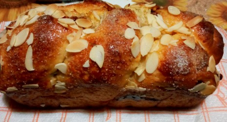
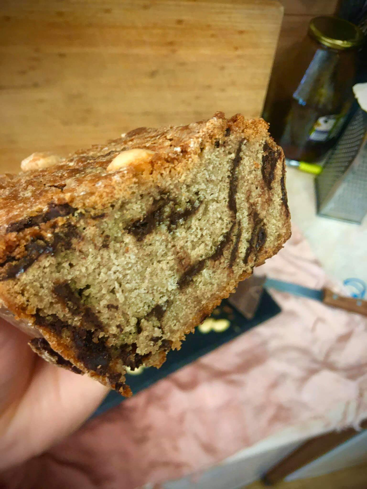
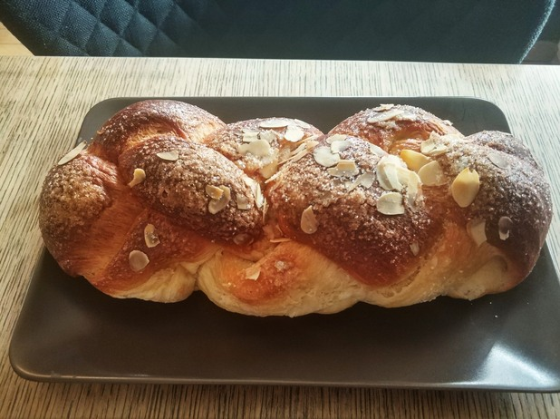

Козунак с шоколад и орехи с поръска бадем
  Информация за рецептата
Козунакът представлява сладък обреден хляб,
който символизира тялото на Иисус Христос.
у нас козунакът се е наложил сравнително късно,
в периода 1915–1920 г.
Дотогава за празника са се месили други хлябове,
наричани колак, пармак, кравай.
Твърди се, че историята на козунака започва в началото
на 17 век във Франция, откъдето постепенно
се пренася в цяла Европа.В Русия великденският обреден
хляб се нарича кулич, а в Италия - панетоне.
По традиция козунакът трябва да се замеси рано в събота сутрин
Необходими продукти
- брашно - 500 г
- мая - 21 г (1/2 кубче прясна)
- прясно мляко - 200 мл
- яйца - 3 бр.
- захар - 130 г
- масло - 60 г
- олио - 40 мл
- лимони - кората на 1/2
- портокали - кората на 1/2
- ванилия - 1 капсула
- течен шоколад - 150 г
- орехи - 100 г
- захар
- филирани бадеми
ЗА ПЛЪНКАТА
ЗА ПОРЪСВАНЕ
Начин на приготвяне
- Затоплете леко прясното мляко и в него натрошете маята. Прибавете и 4-5 с.л. брашно. Разбъркайте и оставете маята да се активира.
- Пресейте брашното.
- Разбийте яйцата (1 жълтък отделете за намазване на козунака) със захарта много добре
- Прибавете ванилията, втасалата вече мая, настърганите кори от лимона и портокала.
- Разбъркайте всичко и започнете да добавяте по малко от брашното и половината от смесените масло и олио.
- До тук може да работите и с миксер. Доомесете с останалото брашно.
- Когато брашното е поето изцяло, започнете да прибавяте останалата мазнина, като разтегляте тестото, намазнявате и прегъвате на плик.
- Това направете на 3-4 пъти, докато се абсорбира напълно.
- Сложете готовото тесто в намазнен съд и го покрийте с фолио. Оставете на топло да втаса за около 2 часа.
- Разтопете в микровълнова фурна шоколада за 30 секунди, за да се втечни.
- Разделете втасалото вече тесто на три части.
- От всяка оформете продълговата елипса. Намажете с разтопения шоколад и поръсете с нарязани или смлени орехови ядки.
- Откъм дългата страна навийте на руло и леко усучете.
- Така направете и с останалите две части. Оформете на плитка и поставете в подмазан съд, в който ще печете.
- Следва отново втасване за около 30 минути
- Разбъркайте отделения жълтък с малко вода и намажете козунака.
- Поръсете със захар и филиран бадем и печете в загрята фурна на 160 градуса с вентилатор за около 25-30 минути.
More info
готовият козунак се оставя да изтине и може да се консумира във неделя.